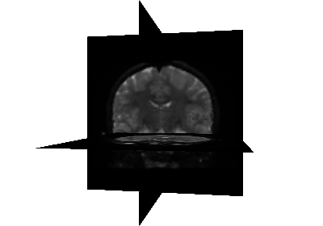

How to examples#
These examples provide details of various advanced and more complex usage of pyAFQ. These are intended to provide a reference and answer questions about the variety of pyAFQ functionality that is available.

How to add new bundles into pyAFQ (Acoustic Radiations Example)
How to add new bundles into pyAFQ (Acoustic Radiations Example)

How to add new bundles into pyAFQ (SLF 1/2/3 Example)
How to add new bundles into pyAFQ (SLF 1/2/3 Example)


How to add new bundles into pyAFQ(Optic Radiations Example)
How to add new bundles into pyAFQ(Optic Radiations Example)

How to track the Optic Tract and Posterior Optic Nerve in pyAFQ
How to track the Optic Tract and Posterior Optic Nerve in pyAFQ

Understanding the different stages of tractometry with videos
Understanding the different stages of tractometry with videos